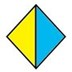
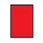
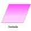

Bienvenidos al Curso de Matemáticas
Explora conceptos fundamentales de matemáticas a través de prácticas interactivas y aplicaciones en software especializado.
Introducción a Crear Funciones
En este módulo se introducen los conceptos de funciones lineales y cuadráticas. Las funciones lineales tienen la forma f(x) = mx + b, mientras que las cuadráticas son f(x) = ax² + bx + c, con gráficas en forma de parábola. Aprenderás a graficar estas funciones utilizando GeoGebra, un software matemático dinámico que facilita la visualización y análisis gráfico.
Introducción a Ecuaciones e Inecuaciones Exponenciales y Logarítmicas
Este módulo cubre la resolución de ecuaciones exponenciales y logarítmicas, abordando las propiedades de potencias. Aprenderás a graficar funciones y resolver ecuaciones en diversos contextos utilizando GeoGebra, así como la importancia de estas ecuaciones en aplicaciones académicas y prácticas.
Introducción a Funciones Exponenciales y Logarítmicas
Este apartado ofrece una guía sobre la representación gráfica y la comprensión de funciones exponenciales y logarítmicas. Se profundiza en sus propiedades, cómo graficarlas y aplicarlas en ejercicios prácticos. También incluye instrucciones para prácticas de laboratorio y los materiales necesarios para alcanzar los objetivos del curso.
Introducción a Geometría Plana
En este módulo se analizan elementos unidimensionales como rectas, semirrectas y segmentos, además de ángulos y polígonos. La geometría plana simplifica el mundo tridimensional a un plano, estudiando características bidimensionales de los objetos. Se definen conceptos clave y se exploran figuras planas como circunferencias y polígonos.
Introducción a Geometría Plana 2
Este módulo continúa con el estudio de la geometría plana, abarcando figuras y objetos en un plano bidimensional. Se definen conceptos como puntos, líneas, ángulos, triángulos, cuadriláteros y círculos. Se introduce el uso de GeoGebra para trabajar con geometría y álgebra, ayudando a resolver problemas en áreas como arquitectura, ingeniería y cartografía.
CREAR Y GRAFICAR FUNCIONES
Funciones lineales
Es una función polinómica de primer grado, en una gráfica se representa como una
línea recta y se escribe: f(x) = mx + b.
Recordemos que los polinomios de primer grado tienen la variable elevada a la primera potencia; cuando la potencia es 1, normalmente no se escribe.
m= pendiente de la recta (constante).b= punto de corte de la recta con el eje y (constante).x= variable.
Cuando modificamos m en una función lineal, se modifica la pendiente, es
decir, la inclinación de la recta; si cambiamos b, la línea se mueve
hacia arriba o abajo.
Las funciones se pueden clasificar en tres tipos:
- Si el valor de
mes mayor a cero, la función es creciente. - Si el valor de
mes menor a cero, la función es decreciente. - Si
mes igual a cero, la función es constante (su gráfica será una recta paralela al eje X).
Ejemplo
Tenemos la siguiente función: y=1.5x +3.
La pendiente es 1.5; cuando aumentamos x en una unidad, y
aumenta en 1.5 unidades. b = 3, entonces la recta corta el eje y en el
punto y = 3.
Para graficar podemos hacer una tabla de valores y graficar cada punto en el plano cartesiano.

Funciones cuadráticas
Es una función polinómica de segundo grado que se escribe:
f(x)=ax^2+bx+c donde a, b y c
son números reales diferentes a cero.
Si a>0, el vértice de la parábola estará en la parte inferior; si
a<0, el vértice estará en la parte superior de la parábola.
La gráfica de una función cuadrática es una parábola de la cual el eje de simetría es
paralelo al eje de las y.
Para obtener las raíces de la ecuación seguimos estos pasos:
- Igualar la ecuación a cero.
- Factorizar la ecuación.
- Igualar cada factor a cero y obtener las raíces.
Nota:
- Cuando la parábola se encuentre hacia arriba, es positiva.
- Cuando la parábola se encuentre hacia abajo, es negativa.
Ejemplo
Tenemos la siguiente función: y=2x^2-4x-1.
Para graficar podemos hacer una tabla de valores y graficar cada punto en el plano cartesiano.

Uso de GeoGebra
GeoGebra es un software matemático dinámico para todos los niveles educativos que reúne geometría, álgebra y hojas de cálculo.
Para graficar una función lineal en GeoGebra, siga los siguientes pasos:
- Abrir GeoGebra: Abra el software GeoGebra en su computadora o en la aplicación en línea https://www.geogebra.org.
- Dar clic en el apartado “INICIAR CALCULADORA” para visualizar el espacio de trabajo del aplicativo.
- Ofrece varias funcionalidades como:
- Álgebra: se especifica la función y/o ecuación.
- Herramientas: contiene las herramientas para mover, trazar, eliminar, agregar (puntos, líneas, texto, etc.).
- Tabla: se especifican los valores para realizar los trazos.
- Finalmente se encuentra el área del plano cartesiano donde estarán graficadas las funciones y sus valores.
Ejemplo: Graficar la siguiente función lineal y cuadrática.
Función Lineal
Como primer punto, se debe escribir la función en el apartado de “Álgebra” donde se encuentra la entrada de escritura.
Seguido, se debe escribir la función a graficar, en este caso, y=2x+1.
Se encuentra la tabla de valores desde -2 a 2; para ello, se da clic en los tres
puntos y se selecciona “Tabla de Valores”.
Finalmente, se obtiene una gráfica ordenada con su tabla de valores en puntos.
Función Cuadrática
Como primer punto, se debe escribir la función en el apartado de “Álgebra” donde se encuentra la entrada de escritura.
Seguido, se debe escribir la función a graficar, en este caso,
y=2x^2-4x-1. Se encuentra la tabla de valores desde -2 a 2; para ello,
se da clic en los tres puntos y se selecciona “Tabla de Valores”.

Finalmente, se obtiene una gráfica ordenada con su tabla de valores en puntos.

Cabe destacar que se puede agregar más de una función, por lo tanto, ambas se pueden graficar sin ningún problema.
OBJETIVOS
- Entender de mejor forma cómo se grafican las funciones lineales y cuadráticas.
- Analizar, documentar e interpretar los resultados obtenidos.
Equipos
Computador e internet

ACTIVIDADES POR DESARROLLAR
Ejercicios y Preguntas
Ingresando a la herramienta GeoGebra, realice los siguientes ejercicios:
Ejercicio 1
- Resolver y graficar la siguiente función lineal: \( f(x) = -3x + 2 \)
- Ingrese la tabla de valores del
-5al5 - Determinar qué tipo de pendiente es (creciente, decreciente o constante)
Ejercicio 2
- Calcular la pendiente de la recta \( 2y = 4x + 12 \) usando la forma \( y = mx + b \)
- Graficar la función
- Determinar qué tipo de pendiente es (creciente, decreciente o constante)
Ejercicio 3
- Resolver y graficar la siguiente función cuadrática: \( f(x) = -x^2 + 3 \)
- Ingrese la tabla de valores del
-7al7 - Determinar qué tipo de parábola es (positiva o negativa)
Responder las siguientes preguntas:
- ¿Cuál de las siguientes pendientes hace que la función sea constante?
m=3m= \frac{3}{5}m=0m=-5
- Se puede decir que la función lineal es:
- una recta dibujada en el plano cartesiano
- una curva que va hasta el infinito
- una función cuadrática
Quiz 1
Ecuaciones e Inecuaciones Exponenciales y Logarítmicas
Ecuaciones Exponenciales
Una ecuación exponencial es aquella en la que aparecen exponenciales, es decir, potencias cuyos exponentes son expresiones en las que aparece la incógnita, \( x \). El método de resolución consiste en conseguir una igualdad de exponenciales con la misma base para poder igualar los exponentes. Por ejemplo:
\( 3^{2x} = 3^6 \)
La ecuación anterior se cumple si los exponentes son iguales. Por tanto, en este ejemplo el valor que debe tomar \( x \) es 3.
Para conseguir igualdades como la anterior, se tiene que factorizar, expresar los números en forma de potencias, aplicar las propiedades de las potencias y escribir las raíces como potencias.
Propiedades de las Potencias
- \( a^1 = a \)
- \( a^0 = 1 \) (para \( a \neq 0 \))
- \( a^n \cdot a^m = a^{n+m} \)
- \( \frac{a^n}{a^m} = a^{n-m} \)
- \( (a^n)^m = a^{n \cdot m} \)
- \( (a \cdot b)^n = a^n \cdot b^n \)
- \( a^{-1} = \frac{1}{a} \) (para \( a \neq 0 \))
- \( a^{-n} = \frac{1}{a^n} \) (para \( a \neq 0 \))
- \( (a \cdot b)^{-n} = a^{-n} \cdot b^{-n} \)
Inecuaciones Exponenciales
Es una desigualdad donde la variable se encuentra como exponente de un número o letra, y se trabaja con los símbolos de desigualdad.
Caso 1: Cuando \( a > 1 \)
\( a^{f(x)} > a^{g(x)} \) si y sólo si \( f(x) > g(x) \)
\( a^{f(x)} \ge a^{g(x)} \) si y sólo si \( f(x) \ge g(x) \)
\( a^{f(x)} < a^{g(x)} \) si y sólo si \( f(x) < g(x) \)
\( a^{f(x)} \le a^{g(x)} \) si y sólo si \( f(x) \le g(x) \)
Caso 2: Cuando \( 0 < a < 1 \)
\( a^{f(x)} > a^{g(x)} \) si y sólo si \( f(x) < g(x) \)
\( a^{f(x)} \ge a^{g(x)} \) si y sólo si \( f(x) \le g(x) \)
\( a^{f(x)} < a^{g(x)} \) si y sólo si \( f(x)> g(x) \)
\( a^{f(x)} \le a^{g(x)} \) si y sólo si \( f(x) \ge g(x) \)
Ecuaciones de Logaritmos
Una ecuación logarítmica es una ecuación cuya incógnita (o incógnitas) se encuentra multiplicando o dividiendo a los logaritmos, en sus bases o en el argumento de los logaritmos (dentro de los logaritmos). Por ejemplo:
\( \log_2 (2x + 4) = 3 \)
Las propiedades que deben cumplir estas ecuaciones son:
- \( \log_a b = x \) implica \( a^x = b \)
- \( \log_a a = 1 \)
- \( \log_{10} A = \log A \)
- \( \log (A \cdot B) = \log A + \log B \)
- \( \log \left(\frac{A}{B}\right) = \log A - \log B \)
- \( \log A^n = n \cdot \log A \)
Además, es necesario comprobar las soluciones para verificar que no tenemos el logaritmo de un número negativo o de cero, lo cual es muy frecuente cuando tenemos una expresión de segundo grado en el argumento del logaritmo.
Inecuaciones Logarítmicas
Este tipo de inecuación se caracteriza por tener al menos una incógnita afectada del operador logarítmico.
Casos:
- \( \log_b x > \log_b y \) implica \( x > y \), si \( b > 1 \)
- \( \log_b x < \log_b y \) implica \( x < y \), si \( b> 1 \)
- \( \log_b x > y \) implica \( x > b^y \), si \( b > 1 \)
- \( \log_b x < y \) implica \( x < b^y \), si \( b> 1 \)
OBJETIVOS
- Comprender las bases teóricas sobre las ecuaciones e inecuaciones exponenciales y logarítmicas.
- Saber cuándo se aplican los diferentes casos de las inecuaciones exponenciales y logarítmicas.
- Entender cómo aplicar las propiedades de la potencia en las ecuaciones exponenciales.
Equipos
Computador e internet
Calculadora

ACTIVIDADES POR DESARROLLAR
Ejercicios y Preguntas
Vamos a resolver el siguiente ejercicio de aplicación sobre las ecuaciones exponenciales y se va a graficar en GeoGebra. El azúcar se disuelve en el agua, siguiendo la fórmula: \( A(t) = c \cdot e^{-K \cdot t} \), donde “c” y “k” son constantes. A(t) es el azúcar restante o no disuelta. En un recipiente en el que inicialmente se colocan 30 Kg de azúcar, esta cantidad se reduce a 10 kg luego de 4 horas. Trazar la gráfica de azúcar no disuelta en función del tiempo.
Procedimiento
- Primero debemos hallar el valor de las constantes. El primer tiempo es 0 porque es cuando colocamos el azúcar en agua, así que empezamos con ese dato.
- Para \( t = 0 \): \[ 30 = c \cdot e^{-K \cdot 0} \] \[ 30 = c \cdot e^0 \] \[ 30 = c \cdot 1 \] \[ 30 = c \]
- Ya tenemos una constante. Ahora, para el valor de la segunda constante, tomamos el segundo valor dado en el problema, que es cuando pasan 4 horas y tenemos 10 kg de azúcar.
- Para \( t = 4 \): \[ 10 = 30 \cdot e^{-K \cdot 4} \] \[ \frac{10}{30} = e^{-4K} \] \[ \frac{1}{3} = e^{-4K} \] \[ \ln \left(\frac{1}{3}\right) = -4K \] \[ -1.099 = -4K \] \[ K = 0.27475 \]
- Contando con las dos constantes, reemplazamos en la ecuación que nos planteó el problema, la cual queda de la siguiente manera: \[ A(t) = 30 \cdot e^{-0.27475 \cdot t} \]
- Con la ecuación resuelta, realizamos una gráfica para obtener valores y así
poder graficar. La tabla debe tener la siguiente composición:
- Tiempo: 0, Azúcar: 30, (0; 30)
- Tiempo: 4, Azúcar: 10, (4; 10)
- Tiempo: 10, Azúcar: \( 30 \cdot e^{-0.27475 \cdot 10} = 1.92 \), (10; 1.92)
- Tiempo: 15, Azúcar: \( 30 \cdot e^{-0.27475 \cdot 15} = 0.49 \), (15; 0.49)
- Tiempo: 20, Azúcar: \( 30 \cdot e^{-0.27475 \cdot 20} = 0.12 \), (20; 0.12)
- Para graficar la función, ingrese a la página GeoGebra y observe la interfaz. Ingrese la función en la opción "entrada" y use el teclado matemático que facilita la página. Luego, ingrese las coordenadas obtenidas de la función y cambie el color de los puntos si lo desea.
Realizar los siguientes ejercicios sobre ecuaciones exponenciales y logarítmicas:
- Resolver: \( 3^x = 27 \)
- Resolver: \( 2^x + 2 = 16 \)
- Resolver: \( 6^x + 1 = 2^x \)
- Resolver: \( 3^x + 1 = 9^x \)
Quiz 2
Funciones Exponenciales y Logarítmicas
Funciones Exponenciales
La función exponencial es aquella que a cada valor real \( x \) le asigna la potencia \( a^x \) con \( a > 0 \) y \( a \neq 1 \). Esta función se expresa comprendiendo que el número \( a \) se denomina base.
\( f(x) = a^x \)
Su gráfica es de la siguiente manera:
Características:
- Dominio: El dominio son todos los números reales.
- Recorrido: El recorrido son todos los números reales positivos.
- Todas las funciones exponenciales son continuas.
- Todas son también cóncavas.
- Si \( a \) es mayor que 1 (\( a > 1 \)), la función es creciente. En cambio, si \( a \) es menor que 1 (\( a < 1 \)), la función es decreciente.
- La función exponencial es inyectiva.
Propiedades:
- \( a^0 = 1 \)
- \( a^1 = a \)
- \( a^{-x} = \frac{1}{a^x} \)
- \( a^x \cdot a^y = a^{x+y} \)
- \( \frac{a^x}{a^y} = a^{x-y} \)
- \( (a^x)^y = a^{x \cdot y} \)
- \( (a \cdot b)^x = a^x \cdot b^x \)
- \( \left(\frac{a}{b}\right)^x = \frac{a^x}{b^x} \)
- \( a^{\frac{x}{y}} = \sqrt[y]{a^x} \)
Funciones Logarítmicas
La función logarítmica es aquella que está formada por un logaritmo de base \( a \), siendo \( a \) un real positivo (\( a > 0 \)) y diferente de 1 (\( a \neq 1 \)).
Cuando \( 0 < a < 1 \), entonces la función logarítmica es una función decreciente y cuando \( a> 1 \), entonces es una función creciente. Se expresa de la forma:
\( f(x) = \log_a(x) \)
Características:
- Recorrido: El recorrido son todos los números reales.
- Dominio: El dominio son todos los números reales positivos.
- Todas las funciones logarítmicas son continuas.
- Todas son también inyectivas.
- Es creciente si \( a > 1 \).
- Es decreciente si \( 0 < a < 1 \).
- En su expresión simple, siempre pasan por los puntos \( (1, 0) \) y \( (a, 1) \).
Su gráfica es de la siguiente manera:
Propiedades:
- Función logarítmica del producto: \( \log_a(x \cdot y) = \log_a(x) + \log_a(y) \)
- Función logarítmica de la división: \( \log_a\left(\frac{x}{y}\right) = \log_a(x) - \log_a(y) \)
- Función logarítmica del inverso multiplicativo: \( \log_a\left(\frac{1}{x}\right) = -\log_a(x) \)
- Función logarítmica de la potencia: \( \log_a(x^y) = y \cdot \log_a(x) \)
- Función logarítmica de la raíz: \( \log_a\left(\sqrt[y]{x}\right) = \frac{1}{y} \cdot \log_a(x) \)
- Cambio de base: \( \log_a(x) = \frac{\log_b(x)}{\log_b(a)} \)
Teniendo en cuenta la función logarítmica, esta se considera como la inversa de la función logarítmica.

OBJETIVOS
- Comprender las bases teóricas sobre las funciones exponenciales y logarítmicas.
- Aprender a graficar funciones exponenciales y logarítmicas.
- Entender cómo aplicar las propiedades de las funciones exponenciales y logarítmicas para la resolución de ejercicios.
Equipos
Computador e internet
Calculadora
ACTIVIDADES POR DESARROLLAR
Ejercicios y Preguntas
Resuelva la siguiente función exponencial \( y = 3^{1 - x} - 1 \) y gráfique en GeoGebra.
Parte a
Para resolver el ejercicio propuesto, realice una tabla con valores para \( x \) para encontrar \( y \) y así obtener la gráfica:
| x | y | (x; y) |
|---|---|---|
| -2 | ||
| -1 | ||
| 0 | ||
| 1 | ||
| 2 |
Parte b
Con los valores en \( x \) podemos reemplazar en la función planteada para encontrar los valores de \( y \):
| x | y | (x; y) |
|---|---|---|
| -2 | \( 3^{1 - (-2)} - 1 = 3^3 - 1 = 27 - 1 = 26 \) | (-2 ; 26) |
| -1 | \( 3^{1 - (-1)} - 1 = 3^2 - 1 = 9 - 1 = 8 \) | (-1 ; 8) |
| 0 | \( 3^{1 - 0} - 1 = 3^1 - 1 = 3 - 1 = 2 \) | (0 ; 2) |
| 1 | \( 3^{1 - 1} - 1 = 3^0 - 1 = 1 - 1 = 0 \) | (1 ; 0) |
| 2 | \( 3^{1 - 2} - 1 = 3^{-1} - 1 = \frac{1}{3} - 1 = -\frac{2}{3} \) | (2 ; -2/3) |
Parte c
Para graficar la función, siga estos pasos en GeoGebra:
- Ingrese a la página de GeoGebra.
- En la opción “entrada”, use el teclado matemático de la página para ingresar la función \( y = 3^{1 - x} - 1 \).
- Observe cómo se grafica la función.
- Ingrese las coordenadas obtenidas de la tabla para representar los puntos en la gráfica.
- Para cambiar el color de los puntos, haga clic derecho sobre ellos, seleccione "propiedades", y ajuste el color según su preferencia.
- Verifique que los puntos coincidan con la gráfica de la función exponencial.
Parte d
Grafique las siguientes ecuaciones exponenciales:
- \( f(x) = 2^{x + 1} \)
- \( f(x) = \left(\frac{1}{3}\right)^{x} \)
Parte e
Resuelva las siguientes funciones logarítmicas y grafique el segundo ejercicio:
- \( f(x) = \log(4 - x) \)
- \( f(x) = \log_{2}(x + 2) \)
Quiz 3
Geometría Plana
Geometría Plana
La geometría plana analiza elementos unidimensionales como la recta, la semirrecta y el segmento. De igual modo, forman parte de este campo de estudios los ángulos y los polígonos.
Esta rama de geometría implica muchas veces la simplificación del mundo que nos rodea en un plano, de manera que no pueden estudiarse todas las características de los objetos. Por ejemplo, no se podría analizar todas las dimensiones de una caja, sino cada una de sus caras que son cuadriláteros.
La geometría plana tiene sus orígenes en la antigüedad, siendo su principal antecedente la obra Los Elementos del matemático griego Euclides y que data del siglo IV A.C. Este es considerado como uno de los textos más influyentes de la historia y recopila nociones básicas de elementos como rectas y polígonos, e incluso podemos encontrar el famoso teorema de Pitágoras.
Ecuación de la Recta
Recta: Es un elemento unidimensional constituido por una serie infinita de puntos que van a una sola dirección, es decir, no presenta curvas.
Semirrecta: Al igual que la recta, es un elemento unidimensional que consiste en una secuencia de puntos, pero no es indefinida, sino que tiene un origen y se prolonga al infinito. Puede definirse también como la porción de una recta definida a partir de un punto de corte.
Segmento: Es un elemento unidimensional constituido por puntos que van en una sola dirección, pero, a diferencia de la semirrecta, está acotado por un punto de origen y un final.
Ángulo
Es el arco que se forma a partir del cruce u origen de dos elementos bidimensionales, ya sean rectas, semirrectas o segmentos.
Polígono
Es una figura bidimensional formada por una serie finita de segmentos no colineales (no forman parte de la misma recta), de manera que forman un espacio cerrado. Algunos ejemplos son los cuadrados, los rectángulos, los rombos, los triángulos o los octógonos. Los polígonos pueden clasificarse en:
- Regulares: Cuando todos sus lados y ángulos interiores tienen la misma medida.
- Irregulares: Cuando no todos sus lados y ángulos interiores son idénticos.
Circunferencia
Es una figura geométrica plana y cerrada que se caracteriza porque todos los puntos que la constituyen se ubican a la misma distancia del centro. Dicha distancia constante se llama radio. También se define a la circunferencia como el perímetro del círculo.
OBJETIVOS
- Realizar los ejercicios planteados.
- Analizar el procedimiento de cada ejercicio con su fórmula.
- Realizar los ejercicios propuestos.
Equipos
Computador e internet
ACTIVIDADES POR DESARROLLAR
Ejercicios y Preguntas
Para realizar las gráficas utiliza el siguiente link: Symbolab.
Ejercicio de Geometría Plana de Ángulos
Si las rectas \(L_1\) y \(L_2\) mostradas en la figura adjunta son paralelas, \(x\) y \(z\) son las medidas de los ángulos en grados sexagesimales, determine el valor de \(x - z\).
Solución
- Como los ángulos de medida \(3z\) y \(z + 20^\circ\) son opuestos por el vértice, tenemos: \[ 3z = z + 20^\circ \] \[ 2z = 20^\circ \] \[ z = 10^\circ \]
- Como los ángulos de medida \(x\) y \(3z\) son conjugados externos: \[ x + 3z = 180^\circ \] \[ x = 180^\circ - 3z \] \[ x = 180^\circ - 3(10^\circ) \] \[ x = 150^\circ \]
- El valor solicitado es: \[ x - z = 150^\circ - 10^\circ = 140^\circ \]
Ejercicio de Geometría Plana de Altura de un Triángulo Equilátero
Demuestre que la longitud de la altura de un triángulo equilátero es igual al producto de la mitad de la longitud del lado por \(\sqrt{3}\).
Solución
- Como el triángulo es equilátero, las longitudes de sus lados y las medidas de sus ángulos son iguales. Los ángulos B y C miden 60º.
- La altura h divide al triángulo en dos triángulos rectángulos, por lo tanto, podemos aplicar funciones trigonométricas: \[ \sin(B) = \frac{h}{a} \] \[ \sin(60^\circ) = \frac{h}{a} \] \[ h = a \sin(60^\circ) \] \[ h = a \cdot \frac{\sqrt{3}}{2} \]
Actividad Extra
- Resolver los ejercicios resueltos.
- ¿Qué es geometría plana?
- Nombre las características principales de la geometría plana.
- ¿En las figuras geométricas existe geometría plana? SI o No. Explique por qué.
- Realizar 4 ejercicios a su elección.
Quiz 4
Geometría Plana
Fundamentación teórica.
La geometría plana se ocupa de estudiar figuras y objetos en un plano o en una superficie bidimensional. Incluye conceptos como puntos, líneas, ángulos, triángulos, cuadriláteros, círculos, y sus propiedades y relaciones.
La geometría plana es una herramienta fundamental para comprender y resolver problemas en diversas áreas, como la arquitectura, la ingeniería, la cartografía, y la topografía.
Elementos de la geometría plana
Recta: Es un elemento unidimensional que está formado por una serie infinita de puntos los cuales van en una sola dirección.
Semirrecta: Es una secuencia de puntos no indefinida que tiene además de un origen, una prolongación al infinito.
Segmento: Está formado por puntos que van en una misma dirección y que está acotado por un punto de origen y un final.
Ángulo: Es un arco que se forma del cruce de dos elementos bidimensionales.
Polígono: Está formado por una serie finita de segmentos los cuales no son colineales y que forman un espacio cerrado.
Circunferencia: Una figura geométrica plana y cerrada en la cual todos los puntos que la constituyen están en la misma distancia del centro.
Figuras de la Geometría Plana
Círculo: Forma delimitada por una línea curva. Cada punto de la línea curva está a la misma distancia de su centro. Los círculos son completamente redondos.
Triángulo: Forma con tres lados. Hay distintos tipos de triángulos como el equilátero, cuyos lados y ángulos son iguales.
Cuadrado: Una forma con cuatro lados de igual longitud y cuatro ángulos de 90˚.
Pentágono: Forma con cinco lados y ángulos iguales.
Deltoide o cometa: Cuadrilátero con dos pares de lados de la misma longitud.
Rombo: Cuadrilátero con los dos pares de lados opuestos paralelos y todos los lados de la misma longitud.
Octógono: Forma con 8 lados iguales.
Óvalo: Curva cerrada similar a un círculo.
GeoGebra
GeoGebra es un software matemático dinámico para todos los niveles educativos que reúne geometría, álgebra, hojas de cálculo, gráficas, estadísticas y cálculo en un solo motor. Además, estos recursos se pueden compartir fácilmente a través de nuestra plataforma de colaboración GeoGebra Classroom donde se puede monitorear el progreso de los estudiantes en tiempo real.
Permite crear y manipular objetos geométricos en un plano 2D y en un espacio 3D, realizar cálculos y gráficos, y resolver problemas matemáticos.
Ingresamos al aplicativo https://www.geogebra.org.
Para poder iniciar el uso de GeoGebra para graficar se debe dar clic en “Geometría” o directamente clic en el siguiente link https://www.geogebra.org/geometry.
Área de trabajo
Estando en el espacio de trabajo Geogebra - Geometría este nos ofrece las herramientas principales para la creación y manipulación de objetos como (mover, crear puntos, segmentos, rectas, polígonos y circunferencias) y otras herramientas para eliminar, agregar texto, etc.
Nota: Para poder agregar el plano cartesiano a nuestra área de trabajo es necesario darle clic en donde se nos van a desplegar varias opciones en donde se debe seleccionar lo siguiente: damos clic en “Mostrar ejes” y “Cuadrículas mayor y menor”.
Creación de Triángulo
Para la creación de nuestra figura es necesario seleccionar el “Polígono regular”.
Se debe seleccionar alguna área de nuestro plano cartesiano marcando un inicio y fin. Al tener marcado el punto final nos va a salir un mensaje el cual nos va a pedir especificar los vértices que se desean crear en este caso es necesario un triángulo para ello se define “3 vértices” y aceptamos.
Nota: Para poder mover el área de trabajo nos ubicamos a las “Herramientas Básicas” y seleccionamos el icono de mano.
Finalmente tenemos la figura creada.
El aplicativo ofrece un sin número de cálculos para las figuras, en este caso vamos a mostrar la longitud entre nuestros vértices. Para ello nos ubicamos en “Medición” y seleccionamos “Distancia o Longitud”.
Para hacer uso de esta función se debe dar clic en cada lado de nuestro triángulo o también llamado “segmento” y nos mostrará automáticamente el valor.
Como otra de sus funcionalidades vamos a calcular el área de nuestro triángulo equilátero en donde la fórmula nos dice: Área = (√3/4) * a² donde a son los segmentos.
Área = (√3/4) * (8)² = 27.7129
Ahora vamos a comprobar si el aplicativo lo calcula de tal forma que dé el mismo resultado, para ello vamos a dar clic en “Área” y seleccionamos nuestra figura.
Nota: Cabe destacar que los textos y figuras tienen un apartado denominado “Propiedades” en donde se le puede modificar el color, tamaño, texto, entre otras funcionalidades útiles.
Existe otra manera para realizar cálculos en nuestras figuras, esto es por medio de la opción “Álgebra” y dando clic en entrada podemos escribir el tipo de cálculo que se desea.
Cabe destacar que en este apartado aparece toda la estructura de nuestra figura, la parte “pol1” hace referencia a los valores de nuestra figura.
Creación de Rombo
Para la realización de la figura, se utiliza la otra herramienta libre llamada, la cual permite colocar los vértices libremente.
Se procede a colocar los puntos en el plano cartesiano de la forma que coincida con el rombo.
Ahora nos dirigimos al apartado “Álgebra” donde estarán de forma teórica los valores de nuestra figura y de cada segmento entre vértices. Como se ve son cuatro puntos los que se debe tener definido.
También nos muestra los segmentos del vértice tales como (AB, BC, CD, DA) y el valor de cada uno.
Finalmente nos mostrará el cálculo automático del Área del rombo el cual es D * d / 2, aparte se va a colocar en la “Entrada” el cálculo del Perímetro P = l * 4.
Área = 18
Perímetro = 16.8 ≈ 17
Creación de Óvalo
Para la realización de la siguiente figura vamos a ubicarnos hasta el final de las herramientas y vamos a dar clic en “más” en ello se mostrarán más herramientas, nos ubicamos en la sección “Cónicas” y seleccionamos el Elipse.
Nos ubicamos en el plano cartesiano en donde debemos indicar cuáles son nuestros vértices principales y un vértice aleatorio. En este caso los principales serán -5 y 5 con el otro en 3.
Nota: Cabe mencionar que los vértices no serán utilizados ya que se va a emplear la figura como óvalo y no como elipse, en este caso se usan diferentes vértices y fórmulas. Por ello se van a ocultar los vértices mencionados.
Vamos a crear los segmentos necesarios para poder calcular mediante fórmulas el área y perímetro.
Si bien se sabe la fórmula para el Área es A = π * a * b y para el Perímetro P = π * (a + b), en donde a y b son los segmentos.
OBJETIVOS
- Comprender el funcionamiento de GeoGebra para graficar Geometría Plana.
- Demostrar la aplicación de fórmulas y la resolución que ofrece el aplicativo.
Equipos
Computador e internet
ACTIVIDADES POR DESARROLLAR
Ingrese a la herramienta https://www.geogebra.org/geometry grafique lo siguiente y muestre el paso a paso de cada figura creada.
Instrucciones
Realice la figura del trapecio siguiendo las siguientes instrucciones.
Ingrese por “entrada” las siguientes fórmulas y compare sus respuestas de forma manual y en el aplicativo.
Trapecio
Para crear un trapecio en GeoGebra, sigue estos pasos:
- Selecciona la herramienta “Polígono” y dibuja un trapecio con las herramientas disponibles.
- Utiliza la opción “Medición” para calcular el área y el perímetro.
Sube capturas de pantalla mostrando el paso a paso en GeoGebra.
Hexágono Regular
Para crear un hexágono regular en GeoGebra, sigue estas instrucciones:
- Selecciona la herramienta “Polígono” y elige “Hexágono regular”.
- Introduce las siguientes fórmulas para calcular el área y el perímetro:
- Área del hexágono: \(a_p = \sqrt{L^2 - \left(\frac{L^2}{2}\right)}\)
- Perímetro del hexágono: \(p = 6 \times L\)
- Área: \(área = \frac{p \times a_p}{2}\)
- Compara tus respuestas manuales con los cálculos en el aplicativo.
Sube capturas de pantalla mostrando el paso a paso en GeoGebra.
Responder las siguientes preguntas:
¿Qué es un polígono?
- Es una figura geométrica de forma cerrada que posee lados, ángulos y vértices
- Es una línea poligonal abierta
- Es una figura geométrica plana delimitada por dos circunferencias policéntricas
- Es la línea recta que une dos puntos de una circunferencia
¿Cuál de las siguientes figuras tiene sus lados y ángulos iguales?
-

- 
- 
- 
Es una figura geométrica que tiene tres lados......
- Triángulo
- Rectángulo
- Cuadrado
- Rombo